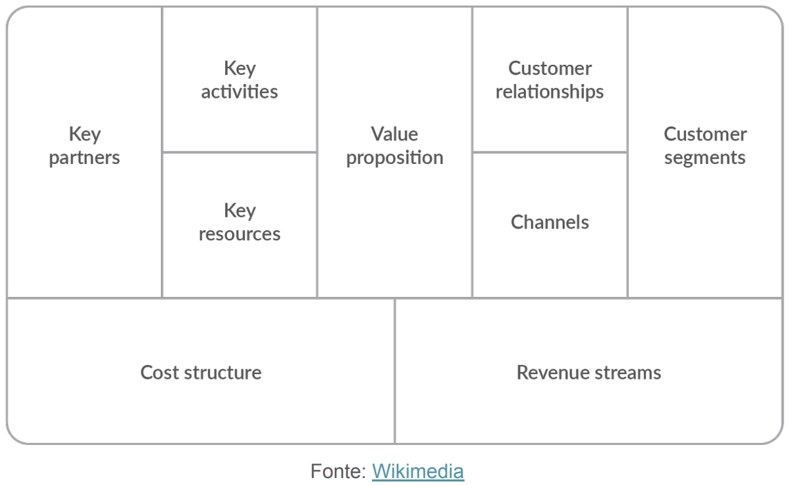

Disciplinas
SISTEMAS DE INFORMAÇÃO Concluído
Materiais
Vídeo 1 - [UFMS Digital] Sistemas de Informação - Módulo 3 - Unidade 2 - A dimensão de negócios de sistemas de informação sendProf° ministrante: Awdren de Lima Fontão
A importância de SI no contexto empresarial
Eficiência operacional:- Automatização de tarefas, reduzindo erros;
- Otimização de processos rotineiros.
- Fornecimento de dados relevantes;
- Análises rápidas para suportar decisões estratégicas.
- Conexão entre departamentos;
- Fluxo eficiente de informações.
Processos de negócios e estratégias organizacionais
Conjunto de atividades inter-relacionadas que transformam insumos em produtos ou serviços de valor.
Eficiência operacional:- Alinhamento eficaz dos processos estratégicos;
- Eliminação de redundâncias e gargalos.
- Ajustes em processos conforme as demandas do mercado;
- Resposta ágil a novas oportunidades e desafios.
- Como os processos podem ser adaptados para atender aos objetivos estratégicos.
- Processos que facilitam a implementação de novas ideias e práticas.
Modelos de negócio e inovação
Definição de Modelos de Negócio:- Estrutura que descreve a forma como uma empresa cria, entrega e captura valor.
- A inovação é fundamental para se destacar no mercado e superar a concorrência.
- Modelos de negócio inovadores muitas vezes resultam em vantagens competitivas duradouras.
- Explorar diferentes estratégias, como inovação de produtos, processos ou modelos de negócios.
- Exemplos de empresas que alcançaram sucesso por meio de inovação em seus modelos de negócio.
Business Model Canvas
Uma ferramenta prática para visualizar e desenvolver modelos de negócio.
